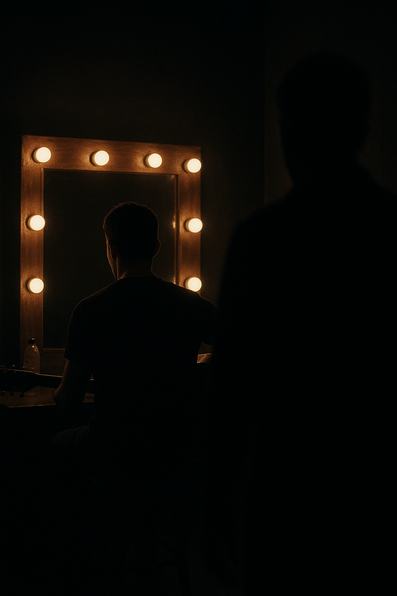

El famoso cantante Macuca fue encontrado sin vida en su camerino, justo después de finalizar su más esperado concierto. La escena dejó perplejos a todos: la puerta cerrada desde adentro, ningún signo de forcejeo, y un silencio inquietante donde antes reinaban los aplausos. La policía, desconcertada ante las escasas pistas, ha decidido recurrir a vuestra ayuda. ¿Serán capaces de analizar los indicios, interrogar a los sospechosos y desentrañar la verdad detrás de este crimen aparentemente imposible? ¿Lograrán arrojar luz sobre el oscuro secreto que se oculta tras bambalinas y llevar al asesino ante la justicia? ¿O permitirán que el culpable escape en las sombras, dejando este caso sin resolver y el nombre de Macuca manchado por siempre? La investigación comienza ahora. Cada decisión cuenta. ¿Están listos para enfrentarse al misterio?
